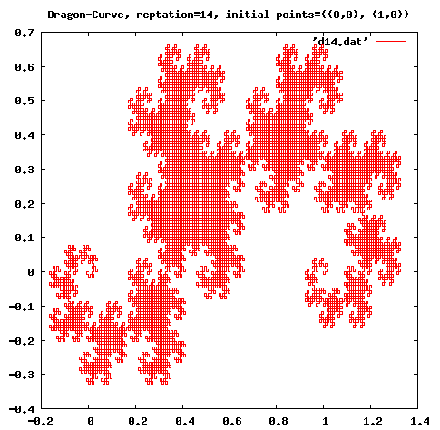
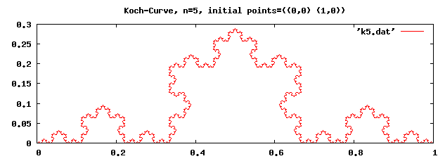

HOME
HOME 書き込む
書き込む
|
HOME |
書き込む |
高階関数はプログラムのモジュール化を促進します。 個々のケースの再帰関数を書く代わりに、多くの場合に適応できる高階関数を書けば、 プログラムが短くなり、見通しが良くなります。
例えば、ソーティングに高階関数を使うとさまざまな条件で並び替えをすることができ、 並び替えの条件と、並び替えの手順を完全に分離することができます。 SRFI-95 に定義されている sort という関数は２つの引数をとり、最初の引数に並び替えるリスト、 ２番目の引数に順序付けをする手続きを引数にとります。 例えば、整数のリストを単純に昇順に並び替えるときは次のようにします。 < が２つの数を比較する関数です。
> (sort '(7883 9099 6729 2828 7754 4179 5340 2644 2958 2239) <)
(2239 2644 2828 2958 4179 5340 6729 7754 7883 9099)
また、下２桁が小さい順に並べるには次のようにします。
> (sort '(7883 9099 6729 2828 7754 4179 5340 2644 2958 2239)
(lambda (x y) (< (modulo x 100) (modulo y 100))))
(2828 6729 2239 5340 2644 7754 2958 4179 7883 9099)
このように、並べ替える手順 (quick sort, merge sort, etc) と２つの要素を比較する
関数が完全に分離されているので、プログラムの再利用が促進されます。この文書では、まず、処理系にあらかじめ定義されている高階関数について説明し、 それから自前の高階関数を作ってみます。Scheme は手続きと他のデータを全く区別しないので、 手続きも単に引数に渡してやるだけで、簡単に高階関数を作ることができます。
実は、Scheme であらかじめ定義されている関数のかなりの部分が高階関数です。 理由は、Scheme では、ブロックを定義する構文が無いので、lambda 式（つまり無名関数） がブロックの働きをするからです。
(map procedure list1 list2 ...)procedure は手続きと結びついたシンボルまたは、lambda 式で定義される無名関数です。 引数にとるリストの数は、procedure の引数によって変わります。
例
; '(1 2 3) と '(4 5 6) の各要素を足し合わせる。 (map + '(1 2 3) '(4 5 6)) ⇒ (5 7 9) ; '(1 2 3) の各要素を２乗したリストを返す。 (map (lambda (x) (* x x)) '(1 2 3)) ⇒ (1 4 9)
例：
(define sum 0) (for-each (lambda (x) (set! sum (+ sum x))) '(1 2 3 4)) sum ⇒ 10
> (require srfi/1) ; 呼び出し方は処理系によって異なる > (filter positive? '(1 2 -3 -4 5)) (1 2 5)
> (require srfi/1) > (fold + 0 '(1 2 3 4)) 10 > (fold + 0 '(1 2)) 3 > (fold + 0 '(1)) 1 > (fold + 0 '()) 0 > (fold list '() '(1 2 3 4)) (4 (3 (2 (1 ()))))
> (sort '(3 5 1 4 -1) <) (-1 1 3 4 5) > (require rnrs/sorting-6) > (vector-sort < #(1 3 5 2)) ; vector については ヴェクトルと構造体 で説明します。 #(1 2 3 5)
(apply max '(1 3 2)) ⇒ 3 (apply + 1 2 '(3 4 5)) ⇒ 15 (apply - 100 '(5 12 17)) ⇒ 66
(define (member-if proc ls) (cond ((null? ls) #f) ((proc (car ls)) ls) (else (member-if proc (cdr ls)))))
(member-if (lambda(x) (< 0 x)) '(0 -1 -2 3 5 -7)) ⇒ (3 5 -7)また、比較する関数を指定して、あるものがリストにあるか調べる関数 member は次のように書けます。
(define (member proc obj ls) (cond ((null? ls) #f) ((proc obj (car ls)) ls) (else (member proc obj (cdr ls)))))
(member string=? "hello" '("hi" "guys" "bye" "hello" "see you"))
⇒ ("hello" "see you")
001: ;;;;;;;;;;;;;;;;;;;;;;;;;;;;;;;;;;;;;;;;;;;;;;;;;;;;;;;;;;;;;;;;;;;;;;;;;;;;;;;;;;;;;;;; 002: ;;; 003: ;;; frac.smc 004: ;;; 005: ;;; draw fractal curves 006: ;;; by T.Shido 007: ;;; on August 20, 2005 008: ;;; 009: ;;;;;;;;;;;;;;;;;;;;;;;;;;;;;;;;;;;;;;;;;;;;;;;;;;;;;;;;;;;;;;;;;;;;;;;;;;;;;;;;;;;;;;;;; 010: 011: (define _x car) 012: (define _y cdr) 013: (define point cons) 014: 015: (define (inc i) (+ 1 i)) 016: 017: ;;; (rappend '(1 2 3) '(4 5 6)) -> (3 2 1 4 5 6) 018: (define (rappend ls0 ls1) 019: (let loop((ls0 ls0) (ls1 ls1)) 020: (if (null? ls0) 021: ls1 022: (loop (cdr ls0) (cons (car ls0) ls1))))) 023: 024: ;;; 025: (define (devide p1 p2 r) 026: (point (+ (* r (_x p1)) (* (- 1.0 r) (_x p2))) 027: (+ (* r (_y p1)) (* (- 1.0 r) (_y p2))))) 028: 029: ;;; print out data points to a file 030: (define (print-curve points fout) 031: (with-output-to-file fout 032: (lambda () 033: (for-each 034: (lambda (p) 035: (display (_x p)) 036: (display " ") 037: (display (_y p)) 038: (newline)) 039: points)))) 040: 041: 042: ;;; the main function to create fractal curves 043: (define (fractal proc n points fout) 044: (let loop((i 0) (points points)) 045: (if (= n i) 046: (print-curve points fout) 047: (loop 048: (inc i) 049: (let iter ((points points) (acc '())) 050: (if (null? (cdr points)) 051: (reverse (cons (car points) acc)) 052: (iter 053: (cdr points) 054: (rappend (proc (first points) (second points)) acc))))))) 055: 'done) 056: 057: 058: 059: ;;; c curve 060: (define (c-curve p1 p2) 061: (let ((p3 (devide p1 p2 0.5))) 062: (list 063: p1 064: (point (+ (_x p3) (- (_y p3) (_y p2))) 065: (+ (_y p3) (- (_x p2) (_x p3))))))) 066: 067: ;;; dragon curve 068: (define dragon-curve 069: (let ((n 0)) 070: (lambda (p1 p2) 071: (let ((op (if (even? n) + -)) 072: (p3 (devide p1 p2 0.5))) 073: (set! n (inc n)) 074: (list 075: p1 076: (point (op (_x p3) (- (_y p3) (_y p2))) 077: (op (_y p3) (- (_x p2) (_x p3))))))))) 078: 079: 080: ;;; koch curve 081: (define (koch p1 p2) 082: (let ((p3 (devide p1 p2 2/3)) 083: (p4 (devide p1 p2 1/3)) 084: (p5 (devide p1 p2 0.5)) 085: (c (/ (sqrt 3) 2))) 086: (list 087: p1 088: p3 089: (point (- (_x p5) (* c (- (_y p4) (_y p3)))) 090: (+ (_y p5) (* c (- (_x p4) (_x p3))))) 091: p4))) 092:
| 行 | 説明 |
|---|---|
| 11—13 | xy 平面上の点はドット対で表します。点の x 座標は car で、y 座標は cdr で得ることができますが、 可読性を上げるためにそれぞれ別名 _x, _y をつけます。また、点は cons で作ることができますが、 これにも別名 point をつけます。 |
| 17—22 | (rappend ls0 ls1) ２つのリストを引数にとり、最初のリストを反転させて、２番目のリストにつなげます。 |
| 25—27 | (devide p1 p2 r) ２点 p1, p2 を比 r で内分する点を求めます。 |
| 29—39 | (print-curve points fout) 点のリスト points を fout に１行に１点ずつ出力します。 |
| 42—55 | (fractal proc n points fout) フラクタル曲線を描く高階関数です。 proc は点を補間する関数、 n は繰り返しの回数、points は点のリスト、fout はデータを出力するファイル名です。 この関数は loop と iter の２重のループからなっています。loop は データリストに対する補間を n 回繰り返します。また、iter は補間関数を使ってデータリストに新しい点を追加していきます。 つまり、 iter を n 回繰り返してフラクタル曲線を描きます。 補間関数 proc は２つの点を引数に取る関数で、１番目の引数そのものと、 新たに補間された点からなるリストを返します。 |
| 59—65 | (c-curve p1 p2) C curve を描くための補間関数です。 |
| 67—77 | (dragon-curve p1 p2) Dragon curve を描くための補間関数です。 |
| 80—91 | (koch p1 p2) Koch 曲線を描くための補間関数です。 |
> (require (lib "compile.ss")) > (compile-file "C:/doc/scheme/frac.scm") #<path:.\compiled\frac_scm.zo> > (load/use-compiled "C:/doc/scheme/compiled/frac_scm.zo") > (fractal c-curve 14 '((0 . 0) (2 . 3)) "c14.dat") (C-curve) done > (fractal dragon-curve 14 '((0 . 0) (1 . 0)) "d14.dat") (Dragon-curve) done > (fractal koch 5 '((0 . 0) (1 . 0)) "k5.dat") (Koch-curve) done'*.dat' というファイルに x 座標と y 座標がテキスト形式で保存されるので、 いつも使っているプロットソフトを使ってプロットします。
図 1--3 は gnuplot を使ってプロットしたものです。

図２: Dragon-Curve

図３: Koch-Curve
例：my-list
(define (my-list . x) x)また、apply を使う必要もあります。
この文章で示したように、Scheme では 自前の高階関数を簡単に定義することができます。
次回は入出力について説明します。
; 1 (define (double ls) (map (lambda (x) (* x 2)) ls)) ; 2 (define (sub ls1 ls2) (map - ls1 ls2))
; 1 (define (filter-even ls) (filter even? ls)) ; 2 (define (filter-10-100 ls) (filter (lambda (x) (<= 10 x 100)) ls ))
(define (sqrt-sum-sq ls) (sqrt (foldr + 0 (map (lambda (x) (* x x)) ls))))
; 1
(define (sort-ave ls)
(let ((ave (/ (apply + ls) (length ls))))
(sort ls (lambda (x y) (< (abs (- x ave)) (abs (- y ave)))))))
; 2
(define (sort-string ls)
(sort ls (lambda (x y) (> (string-length x) (string-length y)))))
;[別解]
;MzScheme では次もつかえる
(define (sort-string ls)
(sort ls #:key string-length >))
; 1 (define (sqrt-sum-sq-a ls) (sqrt (apply + (map (lambda (x) (* x x)) ls)))) ; 2 (define (ave . ls) (/ (apply + ls) (length ls)))
; 1
(define (my-filter fn ls)
(cond
((null? ls) '())
((fn (car ls))
(cons (car ls) (my-filter fn (cdr ls))))
(else
(my-filter fn (cdr ls)))))
; 2
(define (my-map fun . lss)
(letrec ((iter (lambda (fun lss)
(if (null? lss)
'()
(cons (fun (car lss))
(iter fun (cdr lss))))))
(map-rec (lambda (fun lss)
(if (memq '() lss)
'()
(cons (apply fun (iter car lss))
(map-rec fun (iter cdr lss)))))))
(map-rec fun lss)))
(my-map + '(1 2 3) '(10 20 30) '(100 200 300)) ⇒ (111 222 333)
|
HOME |
書き込む |